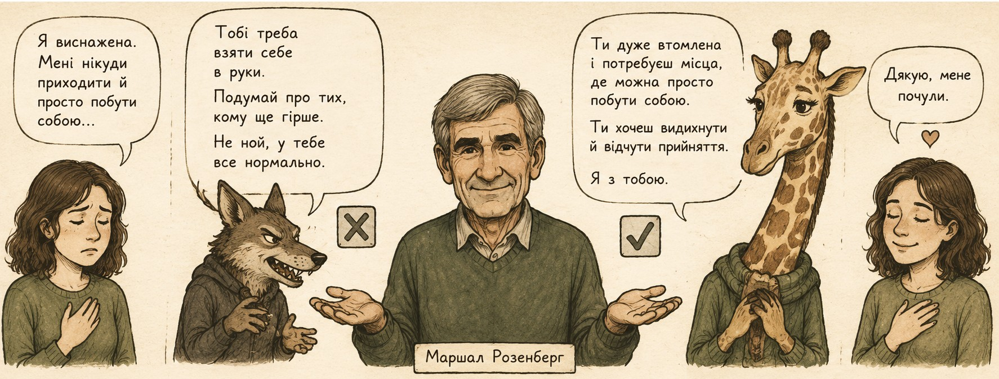
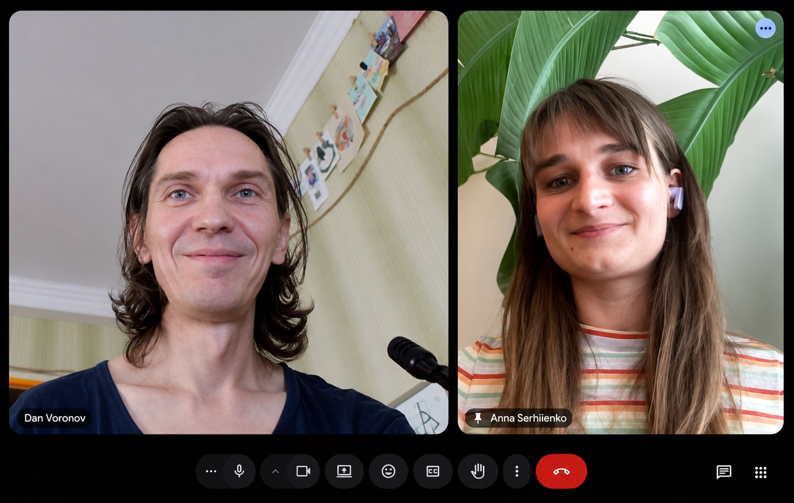

на цінностях Ненасильницького спілкування
Збираємося, щоб стало ясніше, спокійніше та стабільніше. Без тиску, без спонукань в чомусь розібратися, стати кращими чи успішнішими, без роботи над собою, без очікувань відкритості.
Іноді бувають періоди, коли навколо багато невизначеності, змін або внутрішньої втоми. Періоди, коли все частіше відчуваєш, що просто нікуди прийти й спокійно побути собою. Не сильними, не ефективними — а просто видихнути й зупинитися такими, якими ми є.
У такі моменти може бути важливо мати безпечне місце, де можна спокійно подумати, поговорити про те, що зараз живе всередині, та бути почутим(ою)
Ми, Аня та Дан, запрощуємо вас у камерний простір живого контакту. Ми свідомо обмежуємо кількість учасників, щоб у просторі залишалося достатньо уваги для контакту та безпеки всіх. Важливою опорою простору є неповторна присутність та конфіденційність — ми бережемо прожите тут і не поширюємо ніде ніколи.
Це не терапевтична група і не навчальний курс із правильними відповідями. Ми бачимо цей простір як зустрічі рівних для проживання, де можна говорити, слухати, мовчати та просто разом попити чаю, якщо буде такий запит.
Спираючись на цінності ННС ми не ставимо за мету оцінювати когось, давати поради та пропонувати рішення. Роль фасилітаторів — дбати про процес зустрічі, формат, підтримувати атмосферу поваги та уважності, а не визначати, що для всіх правильно.
Мова Життя / Ненасильницьке спілкування (ННС) за Маршаллом Розенбергом — підхід взаємодії людей, який допомагає за допомогої емпатії глибше розуміти себе, свої почуття та потреби, а також будувати більш живий і чесний контакт із іншими людьми та собою (самоемпатія).

Приклад того, як поради та оцінки відрізняються від емпатичного слухання
Нам важливо на початку нічого не очікувати та зустрітися з тим, що є зараз. Почнемо з того, щоб дати місце втомі та завершенню того, що вже відходить.
Протягом 8 зустрічей ми дослідимо наши потреби:
Поступово відкриємо нові джерела опори та сили. Також зустрінимося із невизначеністю світу та неясністю майбутнього. Пошукаємо, які потреби можуть стати новим ресурсом тут і зараз.
Ми випусники Empathy Ukraine — фасилітатори зустрічей самопідтримки у цінностях Ненасильницького спілкування, що слугує основою для створення безпечного емпатичного простору.

Практичний психолог · Освітянин
Інтернет-підприємець і спікер. Вже 20 років у Києві створюю проєкти на перетині технологій, мистецтва і психології: від ранніх коворкінгів та груп медитації до міських походів, Telegram-ботів з живими екскурсіями, освіти про LLM і сучасне програмування.
Перформерка · Психотерапевтка у навчанні
Колишня бізнес-аналітикиня. Цікавлюся мистецькими шляхами проживання дійсності і контакту з іншими людьми. Веду майстер-класи та групи з плейбек-театру та гнучких навичок. Живу у Вільнюсі та долаю виклики адаптації у новій для себе країні.
Фасилітатори не виступають авторитетами, які знають, як жити. Наша роль тут — підтримувати процес, пропонувати практики та дбати про безпечний простір самодослідження.
Зустрічі проходитимуть онлайн у спільному відеодзвінку, раз на тиждень. Тривалість кожної зустрічі — 2 години.
Цей набір стартує 23 червня 2026 / 30 червня 2026.
Перші дві зустрічі відкриті: можна просто прийти без зобов'язання продовження. Саме тут познайомимося та разом сформуємо принципи нашого спільного простору.
Це для вас, якщо:
Після реєстрації у нас із вами відбудеться 15-хвилинний дзвінок, на якому ми відповімо на додаткові запитання та познайомимося.
Вартість — добровільний грошовий внесок у комфортному для вас та нас розмірі, бажано щотижнево.
І якщо під час читання вам спала на думку людина, якій це зараз може бути дуже потрібним, будемо вдячні, якщо поділитеся з нею цим запрошенням.